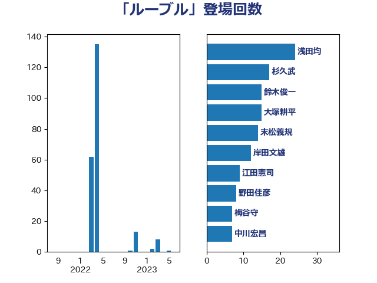

単語「ルーブル」

| 浅田均 | 日本維新の会 | 24 回 |
| 杉久武 | 公明党 | 17 回 |
| 鈴木俊一 | 自由民主党 | 15 回 |
| 大塚耕平 | 国民民主党 | 15 回 |
| 末松義規 | 立憲民主党 | 14 回 |
| 岸田文雄 | 自由民主党 | 12 回 |
| 江田憲司 | 立憲民主党 | 9 回 |
| 野田佳彦 | 立憲民主党 | 8 回 |
| 梅谷守 | 立憲民主党 | 7 回 |
| 中川宏昌 | 公明党 | 7 回 |
| 古賀之士 | 立憲民主党 | 6 回 |
| 熊谷裕人 | 立憲民主党 | 5 回 |
| 櫻井周 | 立憲民主党 | 5 回 |
| 林芳正 | 自由民主党 | 5 回 |
| 石井章 | 日本維新の会 | 4 回 |
| 浜田聡 | NHK党 | 3 回 |
| 小野田紀美 | 自由民主党 | 3 回 |
| 福山哲郎 | 立憲民主党 | 2 回 |
| 渡辺周 | 立憲民主党 | 2 回 |
| 杉本和巳 | 日本維新の会 | 2 回 |
| 和田有一朗 | 日本維新の会 | 2 回 |
| 伊東信久 | 日本維新の会 | 2 回 |
| 道下大樹 | 立憲民主党 | 1 回 |
| 萩生田光一 | 自由民主党 | 1 回 |
| 羽田次郎 | 立憲民主党 | 1 回 |
| 篠原豪 | 立憲民主党 | 1 回 |
| 稲富修二 | 立憲民主党 | 1 回 |
| 神田憲次 | 自由民主党 | 1 回 |
| 松沢成文 | 日本維新の会 | 1 回 |
| 松原仁 | 立憲民主党 | 1 回 |
| 徳永久志 | 無所属 | 1 回 |
| 平木大作 | 公明党 | 1 回 |
| 山岡達丸 | 立憲民主党 | 1 回 |
| 勝部賢志 | 立憲民主党 | 1 回 |